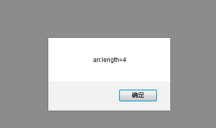
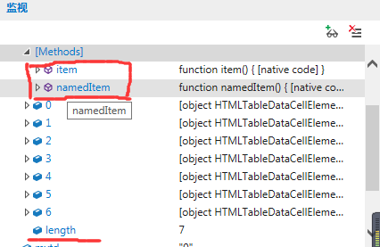

1.键值对new Array()的length值只统计下标是数字的键，可以使用for（var key in arr）的方式进行遍历所有元素。例如
<script type="text/javascript">
var arr = new Array();//创建一个键值对数组
arr['xj'] = '小鸡';
arr['xy'] = '小鸭';
arr[0] = '旺财';
arr[1] = '小白';
arr[3] = '财秋';
arr['sl'] = '水懒';
arr['hs'] = '海狮';
alert('arr.length='+arr.length);//正常来说length应该是7,但是结果却是4,因为最大数字引索为3
</script>
2. for-in 与 for循环的区别:
2.1.for循环和正常遍历一样。主要for-in 容易跟c#语言中的foreach混淆
实例代码
<script type="text/javascript">
//模拟打分
window.onload = function () {
//模拟当鼠标放到星星上时,星星变成实心
document.getElementById('myTable').onmouseover = function () {
// 获取所有列 即星星
var tds = document.getElementById('myTable').getElementsByTagName('td');
//for (var mytd in tds) {
// alert(mytd + " " + typeof (mytd));
// tds[mytd].innerHTML='★'
//}
for (var i = 0; i < tds.length; i++) {
alert(i + " " + typeof (i));
tds[i].innerHTML = '★'
}
}
}
</script>
</head>
<body>
<table id="myTable">
<tr>
<td>☆</td>
<td>☆</td>
<td>☆</td>
<td>☆</td>
<td>☆</td>
<td>☆</td>
<td>☆</td>
</tr>
</table>
</body>
其中有一段循环
//for (var mytd in tds) {
// alert(mytd + " " + typeof (mytd));
// tds[mytd].innerHTML='★'
//}这段中的mytd 并不是代表这对象，而是string类型的引索key，这和c#中的foreach有区别
直接写mytd.innerHTML='★'；是错误的。
必须这么写 tds[mytd].innerHTML='★'；并且for-in 会遍历出所有所有元素，此例中的item、namedItem、length也会被遍历出来，并设置成innerHTML='★'；

而使用for循环 其中的 i 是number类型，只会数字下标而不会是item等字符。所以使用for-in需谨慎。
for (var i = 0; i < tds.length; i++) {
alert(i + " " + typeof (i));
tds[i].innerHTML = '★'
}